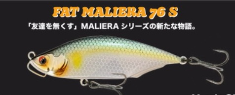
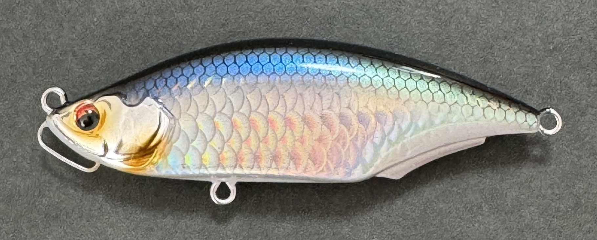
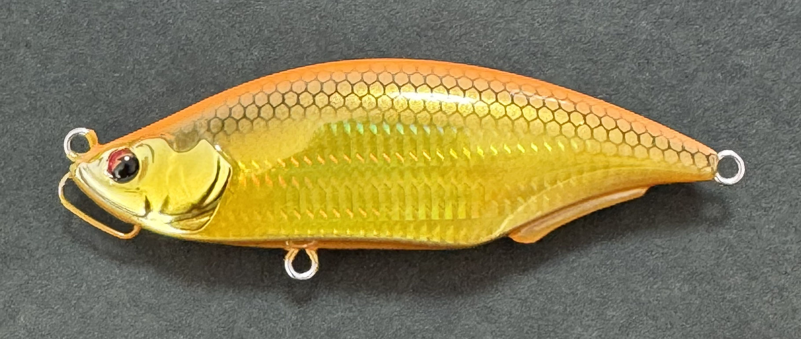
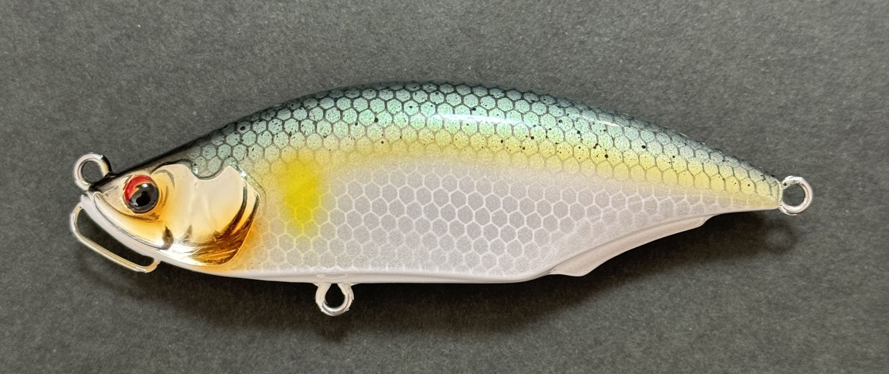
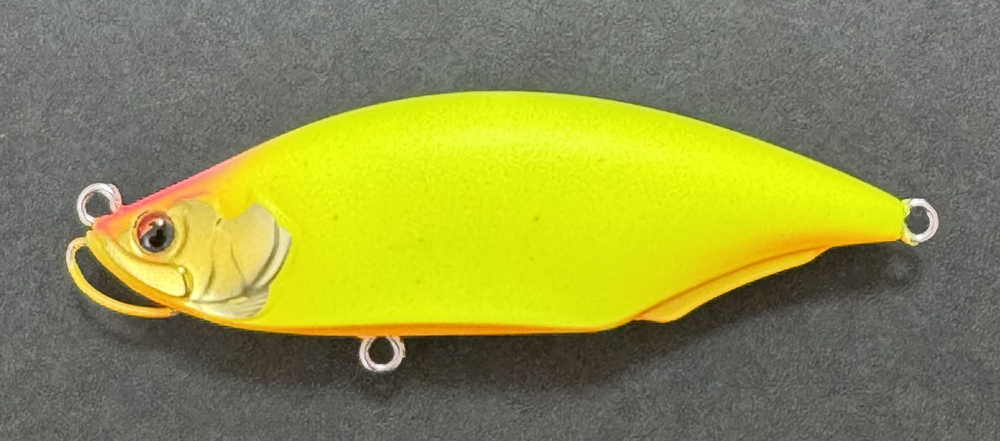

Fat MALIERA76S(ファットマリエラ)
Fat MALIERA76S(ファットマリエラ76S)はトレフルクリエーション（TREFLE CREATION）のシンキングバイブレーションです。
「友達をなくすバイブレーション」として知られるマリエラ68S・58Sの死角を埋めるべく開発された、S字スラロームに特化した新世代ルアー。2026年4月販売開始の注目作です。

スペック
- メーカー
- TREFLE CREATION
- 長さ
- 76 mm
- 重さ
- 22 g
- フック
- #6×2
- リング
- レンジ
- オールレンジ
- タイプ
- バイブレーション
- 沈下タイプ
- シンキング
- アクション
- S字スラローム
- ターゲット
- シーバス
- 価格
- 2200円(税込)
- 発売日
- 2026/4/9
▼今すぐチェック

ファットマリエラ76Sの特徴
予測不能な動きで口を使わせる！マリエラシリーズの「死角」を埋めるS字スラローム特化モデル
-
マリエラシリーズの「死角」を埋める存在
マリエラ68S・58Sはバイブレーション系のタイトなアクションが武器だが、シーバスがそれに反応しない時間帯・状況が存在する。
ファットマリエラ76Sはそのシチュエーションで投入することで、ローテーションに幅を持たせる。コノシロ・イナッコパターンから春のアミ・ハクパターンまで対応 -
予測不能なS字スラロームアクション
ピッチと幅にこだわり抜いた絶妙なS字スラロームは、活性が高い時も低い時もシーバスに口を使わせる。
時にはアングラー自身も予測できないイレギュラーな動きがバイトのトリガーになる。固定重心ながら立ち上がりが速く、着水直後からアピール開始。 -
シャローからボトムまで幅広いレンジ攻略
巻き速度を変えることで水深1m未満のシャローエリアから水深2〜3mのボトム付近まで、1本で攻略可能。
23gの自重と固定重心設計により飛距離も抜群で、広範囲をサーチしながらレンジを変えて探れる。
ファットマリエラ76Sの使い方
基本はタダ巻きのみ。巻き速度を変えながらシーバスの反応を探る。スローリトリーブでシャロー、速めに巻けばレンジが入りボトム付近まで攻められる。
マリエラシリーズ共通の「ライン・ノイズを極力抑える」設計により、激戦区のスレたシーバスにも有効。
ファットマリエラ76Sの得意な状況
秋のコノシロ・イナッコパターンや春のアミ・ハクパターンで特に力を発揮する。ランカーサイズの実績が多い監修者・大坊は激戦区の鶴見川・多摩川・旧江戸川などで結果を出しており、プレッシャーの高いメジャーフィールドでも信頼できる一本。
マリエラ68S・58Sをファーストキャストで通した後のセカンドルアーとして投入するローテーションが特に効果的。
釣れるワンポイント
マリエラ68S・58Sをファーストキャストで通してシーバスのプレッシャーを確認し、反応がなければファットマリエラ76Sに切り替えるローテーションが有効。
S字のピッチが異なるため、同じポイントでもアプローチを変えた別ルアーとして機能する。
カラーは状況に応じて実績のあるメタリックローチやオレンジゴールドからスタートするのがおすすめ。
人気カラー

メタリックローチシリーズ1位を争う人気カラー。デイゲームでの釣果が多い定番カラー。

オレンジゴールドアピール力が高く、濁りや光量の少ない状況で抜群の存在感を発揮。

トレフルアユ鱗模様をパールホワイトで仕上げたブランド代表カラー。弱った魚を演出。

ウルトラマットチャートシーバス定番のマットチャート。どんなシチュエーションでも安定して結果を出す万能カラー。
画像出典:TREFLE CREATION公式HP
ファットマリエラ76Sに似ているルアー
- マリエラ68s
- ジグザグベイト80s
- スネコン90s